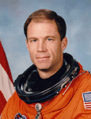

Lyndon B. Johnson Space Center
Houston, Texas 77058
|
National Aeronautics and Space Administration Lyndon B. Johnson Space Center Houston, Texas 77058 |
 |
Biographical Data |
||
RICHARD A. SEARFOSS (COLONEL, USAF, RET.)
NASA ASTRONAUT (FORMER)
PERSONAL DATA: Born June 5, 1956, in Mount Clemens, Michigan, but considers Portsmouth, New Hampshire, to be his hometown. Married; three children. He enjoys running, soccer, radio-controlled model aircraft, Scouting, backpacking, and classical music.
EDUCATION: Graduated from Portsmouth Senior High School, Portsmouth, New Hampshire in 1974; received a bachelor of science degree in aeronautical engineering from the USAF Academy in 1978, and a master of science degree in aeronautics from the California Institute of Technology on a National Science Foundation Fellowship in 1979. USAF Squadron Officer School, Air Command and Staff College, and Air War College.
ORGANIZATIONS: Association of Space Explorers, National Eagle Scout Association, Air Force Association, Academy of Model Aeronautics.
SPECIAL HONORS: Awarded the Harmon, Fairchild, Price and Tober Awards (top overall, academic, engineering, and aeronautical engineering graduate), United States Air Force Academy Class of 1978. Air Force Aero Propulsion Laboratory Excellence in Turbine Engine Design award. USAF Squadron Officer's School Commandant's Trophy as top graduate. Distinguished graduate, USAF Fighter Weapons School. Named the Tactical Air Command F-111 Instructor Pilot of the Year, 1985. Selected for Outstanding Young Men of America, 1987. Recipient of the Air Force Commendation Medal, Air Force Meritorious Service Medal, Defense Meritorious Service Medal, Defense Superior Service Medal, NASA Spaceflight Medal (3), NASA Exceptional Service Medal, NASA Outstanding Leadership Medal, and Air Force Distinguished Flying Cross.
EXPERIENCE: Searfoss graduated in 1980 from Undergraduate Pilot Training at Williams Air Force Base, Arizona. From 1981-1984, he flew the F-111F operationally at RAF Lakenheath, England, followed by a tour at Mountain Home AFB, Idaho, where he was an F-111A instructor pilot and weapons officer until 1987. In 1988 he attended the U.S. Naval Test Pilot School, Patuxent River, Maryland, as a USAF exchange officer. He was a flight instructor at the U.S. Air Force Test Pilot School at Edwards AFB, California, when selected for the astronaut program.
He has logged over 5,000 hours flying time in 56 different types of aircraft and over 939 hours in space. He also holds FAA Airline Transport Pilot, glider, and flight instructor ratings.
NASA EXPERIENCE: Selected by NASA in January 1990, Searfoss became an astronaut in July 1991. Initially assigned to the Astronaut Office Mission Support Branch, Searfoss was part of a team responsible for crew ingress/strap-in prior to launch and crew egress after landing. He was subsequently assigned to flight software verification in the Shuttle Avionics Integration Laboratory (SAIL). Additionally, he served as the Astronaut Office representative for both flight crew procedures and Shuttle computer software development. He also served as the Astronaut Office Vehicle System and Operations Branch Chief, leading a team of several astronauts and support engineers working on Shuttle and International Space Station systems development, rendezvous and landing/rollout operations, and advanced projects initiatives. A veteran of three space flights, Searfoss has logged over 39 days in space. He served as pilot on STS-58 (October 18 to November 1, 1993) and STS-76 (March 22-31, 1996), and was the mission commander on STS-90 (April 17, to May 3, 1998). Searfoss retired from the Air Force and left NASA in 1998. For the next few years he worked in private industry and, more recently, was a research test pilot at NASAs Dryden Flight Research Center. In February 2003, Searfoss left Dryden to pursue private business interests.
SPACE FLIGHT EXPERIENCE: Searfoss served as STS-58 pilot on the seven-person life science research mission aboard the Space Shuttle Columbia, launching from the Kennedy Space Center on October 18, 1993, and landing at Edwards Air Force Base on November 1, 1993. The crew performed neurovestibular, cardiovascular, cardiopulmonary, metabolic, and musculoskeletal medical experiments on themselves and 48 rats, expanding our knowledge of human and animal physiology both on earth and in space flight. In addition, the crew performed 16 engineering tests aboard the Orbiter Columbia and 20 Extended Duration Orbiter Medical Project experiments. The mission was accomplished in 225 orbits of the Earth.
Launching March 22, 1996, Searfoss flew his second mission as pilot of STS-76 aboard the Space Shuttle Atlantis. During this 9-day mission the STS-76 crew performed the third docking of an American spacecraft with the Russian space station Mir. In support of a joint U.S./Russian program, the crew transported to Mir nearly two tons of water, food, supplies, and scientific equipment, as well as U.S. Astronaut Shannon Lucid to begin her six-month stay in space. STS-76 included the first ever spacewalk on a combined Space Shuttle-Space Station complex. The flight crew also conducted scientific investigations, including European Space Agency sponsored biology experiments, the Kidsat earth observations project, and several engineering flight tests. Completed in 145 orbits, STS-76 landed at Edwards Air Force Base, California, on March 31, 1996.
Searfoss commanded a seven person crew on the STS-90 Neurolab mission which launched on April 17, 1998. During the 16-day Spacelab flight the crew served as both experiment subjects and operators for 26 individual life science experiments focusing on the effects of microgravity on the brain and nervous system. STS-90 was the last and most complex of the twenty-five Spacelab missions NASA has flown. Neurolab's scientific results will have broad applicability both in preparing for future long duration human space missions and in clinical applications on Earth. Completed in 256 orbits, STS-90 landed at Kennedy Space Center, Florida, on May 3, 1998.
FEBRUARY 2003